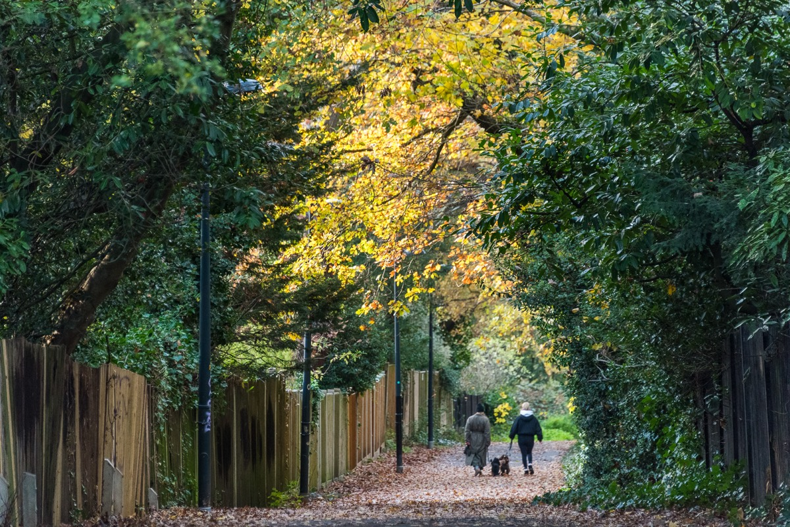
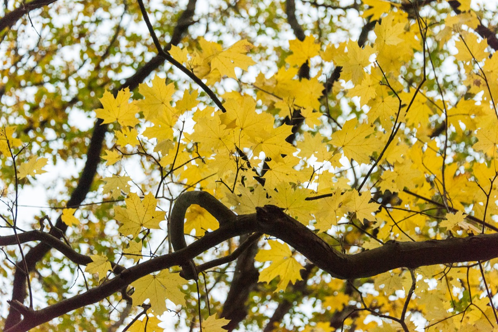
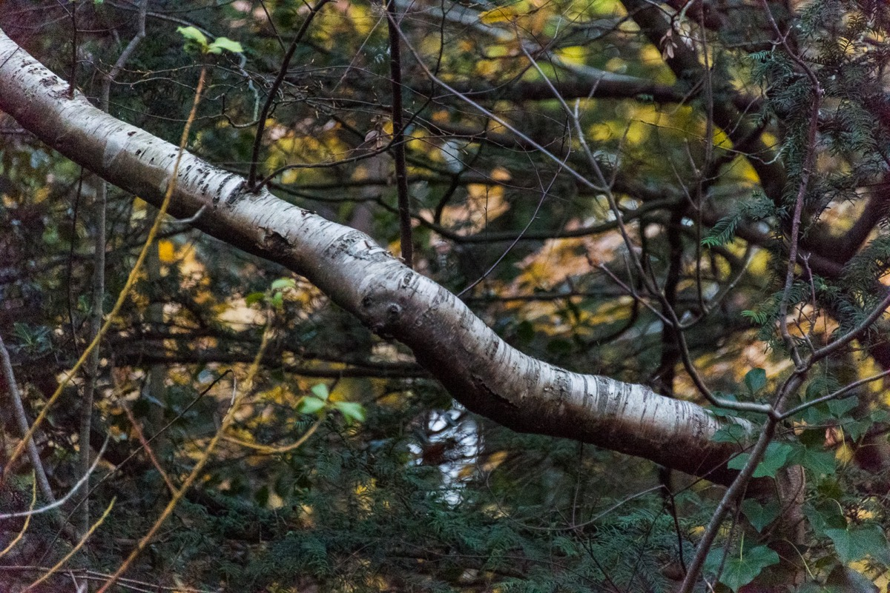
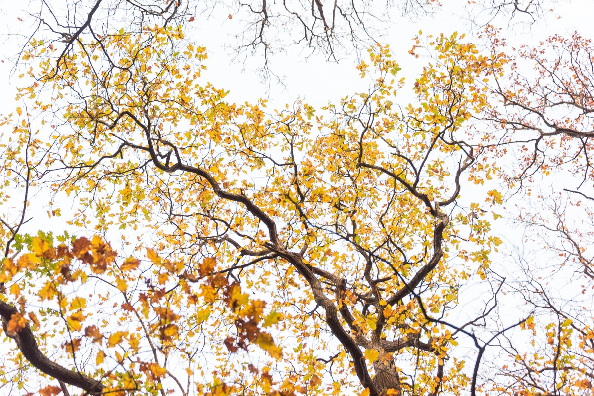
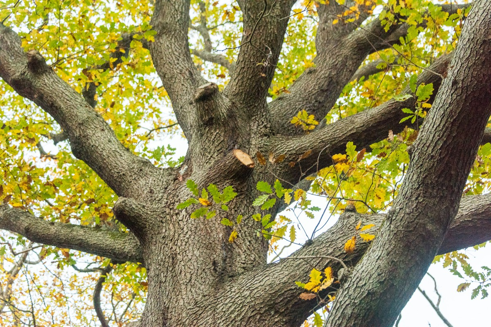
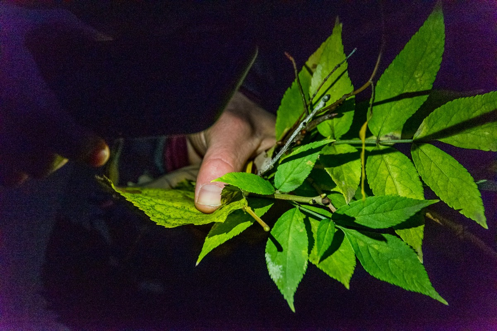

The Wood, and the Missing Opening
Winter is the hard mode of tree identification. There are no leaves to hold up against a book, no blossom, no fruit, just bark, twig, bud and the overall habit of the tree. London Wildlife Trust’s winter tree walk in Sydenham Hill Wood is built around exactly that problem: how to name the trees when they have given you almost nothing to go on.
The walk was led by the guide, the Trust’s Senior Nature Recovery Officer, and set off from the Crescent Wood Road entrance on the afternoon of Sunday 22 November. My notes begin 45 minutes into the walk, so this post begins mid-walk, with the guide weighing up a twig and settling on blackthorn. The event listing promises oak, ash and hazel without their leaves, and their part in London’s development; whatever the guide said about them in the opening stretch is not covered here, and nothing has been invented to fill the gap.
The walk is conversational and rooted in the ground underfoot. The guide talks as much about management as about identification: why a dead oak is left standing, why brash is piled into low hedges, and why a wood on heavy clay struggles when a great many people come to enjoy it. Fittingly, the light was going as the group came back along the old railway, and the last few identifications were made, as the guide put it, more or less in the dark.
The One That Flowers Before It Leafs
My notes open as the guide makes a cautious call. The twig in hand is missing the thorns you would expect, but young blackthorn often needs to mature before it grows them, so blackthorn it is. It belongs with the cherries and plums, and its fruit, the sloe, is the one most people know: the berry you make sloe gin from.

The guide’s best tip is the comparison with hawthorn, which has similar white blossom and a similar small-tree habit, and likes the same lighter ground and wood edges. The difference is the order of events. Hawthorn blossoms in spring after its leaves have unfurled; blackthorn flowers first and leafs afterwards, so a blackthorn in flower is a spectacular cloud of white on bare wood.
Out of flower, the guide leaned on the twig itself. The current year’s growth shows a mottled green-and-brown skin that fades as the wood ages. The buds are small, alternate, sharply pointed and tinged slightly purple. The leaf, when it comes, is narrow and oval, nothing like hawthorn’s lobed leaf. And the thorns do the same job on both: protection against browsing animals.
Sloes, the guide added, are another good clue, and they hang on after the leaves have gone.
“It’s just spectacular in the spring. You’ll see it.”
White Bark and Early Catkins
With birch, the guide said, the bark does the work: white, papery, and obvious even to a beginner. There is a second clue in winter. The catkins, the small green dangling tassels, are already forming, and the guide called them another good indicator when everything else is bare.

A larger silver birch turns up again later on the old railway, where it becomes a talking point of its own (see the last stop).
Two Dead Oaks and a Gap in the Canopy
Two oaks have died in this part of the wood within the last five years or so, and the gap they left is doing precisely what a gap should. Light now reaches the ground, and hazel has appeared in it, a fresh arrival since the oaks went. Told apart from the seedlings around it, the hazel’s leaves are much bigger.

The Trust’s policy here is to promote as much oak regeneration as possible, because of what oak is worth to wildlife. A gap like this one, with young trees pushing up into the light, is the whole point.
We’re trying to promote as much oak regeneration as we can, because of the value of oaks to wildlife.
— THE GUIDE, ON THE GAP LEFT BY THE TWO OAKS
Standing Deadwood, Coppice and Dead Hedges
Dead trees, the guide stressed, are left standing wherever they can be, unless one is at risk of falling on a path. They are among the most valuable habitats in the wood. Woodpeckers and other cavity-nesting birds use them, and so, the guide said, do bats (pipistrelles, I think). Beetles and other insects live in and on the dead wood, and the fungi that break it down complete the chain.
It’s really, really important and valuable habitat. It’s very different from a living tree.
— THE GUIDE, ON STANDING DEAD TREES
The Trust coppices in winter, and the cut material is built into dead hedges: low, stacked barriers of brash. They exist because of the visitors, which the guide was careful to say are wanted. On heavy clay soil, the damage that comes with many feet is trampling. Ground that is walked on repeatedly compacts, and the ground-layer plants vanish with it, and with them the next generation of trees.
A dead hedge keeps people off the regrowth, and it also works as habitat in its own right. The same coppiced material gives hazel and hornbeam a chance to regrow from the stool, and the guide pointed out that individual stools show a good deal of variation.
The Boundary Tree and the Myth of Girth
“Ancient woodland” does not mean the trees are ancient. The guide was clear on this: a wood can be centuries old without a single tree in it being 500 years old, because for most of that time its trees were cut down. Every so often, though, a much older tree turns up, and the likeliest reason is that someone kept it deliberately. One such tree might mark the boundary of a coppice compartment, or of ownership, when the wood was divided up.

This one gave itself away by its shape. Its crown spreads wide, which is the habit of a tree grown in the open. That means the ground around it was once much more open than it is now, and the guide confirmed it from old aerial photographs showing the area with far fewer trees.
A tree can sit there in the wood and pretty much not grow. Then its neighbour comes down, and it shoots up.
— THE GUIDE, ON WHY GIRTH IS A POOR GUIDE TO AGE
That is the catch with the usual trick of measuring the girth and estimating from it. Size is not a reliable indication of age. The guide’s sound alternatives were samples of the wood or, once a tree is down, counting the rings across the cut face.
The older a tree gets, the more it is worth to wildlife, which is why such trees are called veterans. Many are completely hollow, and still alive. The explanation is that the living part of a tree is on the outside. The cambium and the layers beside it carry the water and nutrients up and down the trunk. The heartwood in the middle, the guide said, is dead, does nothing, and can rot away for a very long time without harming the tree.
A hollow veteran therefore offers roosts and holes for birds and bats while it carries on growing.
Wild Cherry and Its Ornamental Cousin
Cherry is a very good tree to learn in winter, because its bark gives it away. The guide pointed to the pronounced horizontal banding on the trunk, the feature that stops cherry being muddled with birch, and to the buds, which are clustered and darker, with a reddish tinge. Wild cherry also self-seeds readily in the more open areas of the wood.
When the leaves are on, the guide said, there is another check: look for small red spots on the leaf. The edge is serrated, and the leaf is not perfectly symmetrical, so it can be confused with elm and with hazel.
Nearby stood a cherry with a very different trunk: smooth, glossy and coppery. This, the guide explained, is the Tibetan cherry, an ornamental planted for exactly that bark, which the wild cherry does not have. It is one of the exotic trees dotted among the natives. The leaves are thicker too.
Cherries are a huge group in gardens. The guide had read of around 500 different ornamental kinds, so nobody can know them all. The ornamentals do bear fruit, but you would be very lucky to find a cherry on one, and it is nothing like a commercial cherry.
Black Buds and an Open Canopy
Ash was the easiest to identify of the afternoon, once you had the trick. The buds are opposite one another along the twig, with a bud at the tip, and they are very black. The guide repeated the point: black scales, opposite buds. Those buds are the quickest way to separate ash from the other trees it can be mistaken for. Ash also seeds itself prolifically, so young ones are everywhere.

Ash casts light shade, and the guide drew the consequence out. Under an ash canopy more light reaches the floor, so woods with a lot of ash tend to have a rich field layer beneath. Beech is the opposite case: its canopy is very heavy shade, little grows underneath, and the soil can bake into hard clay. Where the ground is bare, rain splashes the surface, and nothing builds up to protect it.
Where a tree’s leaves do accumulate and rot, they feed the soil again, and seeds can germinate in that litter. The well-developed understorey you can find under ash, and its absence under dense shade, comes down to that.
It is a sobering note in a stand that is otherwise vigorous. The guide mentioned the mortality across the UK and described it as another fungal disease, in the same breath as an earlier one that has already reshaped British woods.
The Trackbed, a Birch and the Palace That Burned
The walk came back along the old railway, which cuts through the wood. Here the guide showed the group a large silver birch, and the tree supplied its own story. Birch is short-lived. The guide gave its lifespan as about 100 years at most, and the railway closed in 1954. A birch of this size beside the line, on that reading, is likely to have seeded after the trains stopped, so the tree is roughly as old as the wood’s modern wildness.
The guide also pointed out a clematis climbing through a tree here, its stems hard and woody now in winter.
The line led to Crystal Palace, once a huge attraction that stood, as one of the group put it, in the middle of the countryside. The guide did not dwell on the details, so these are added from the sources rather than from the walk.
The Crystal Palace and South London Junction Railway, known as the High Level line, opened in 1865 and closed to passengers on 20 September 1954, after the Palace burned down in 1936. The wood grew over the trackbed. Part of the line is now a nature reserve, running from the Cox’s Walk footbridge to the northern end of the Crescent Wood tunnel, which is now a bat roost.
What We Saw, What We Didn’t, and How to Keep Learning
The guide closed with a stock-take. Of the trees with clustered buds, the group had met only oak and cherry. There was hazel, picked out again towards the end. And there were plenty of species they had missed: field maple and any of the willows, and some of the stranger non-natives in the wood, which include a black mulberry and a monkey puzzle tree, exotic species tucked among the natives.
For anyone who wants to carry on, the guide’s advice was practical. Get a book, or use the free app iNaturalist, where you photograph a leaf or a bird and the app offers an AI suggestion. Other users then confirm or correct the identification, and once enough of them agree the record becomes research grade, so it can be used for science. The app, the guide added, is nicely laid out and has good pictures of British natives.
Honestly, it’s just a matter of looking regularly. Keep asking yourself what that is, and eventually, with repetition, you’ll just know.
— THE GUIDE, ON LEARNING TREES